1 Sistemas de cableado estructurado
Las empresas necesitan interconectar sus equipos informáticos y dispositivos de comunicaciones, que pueden estar ubicados en varias salas y en varias plantas.
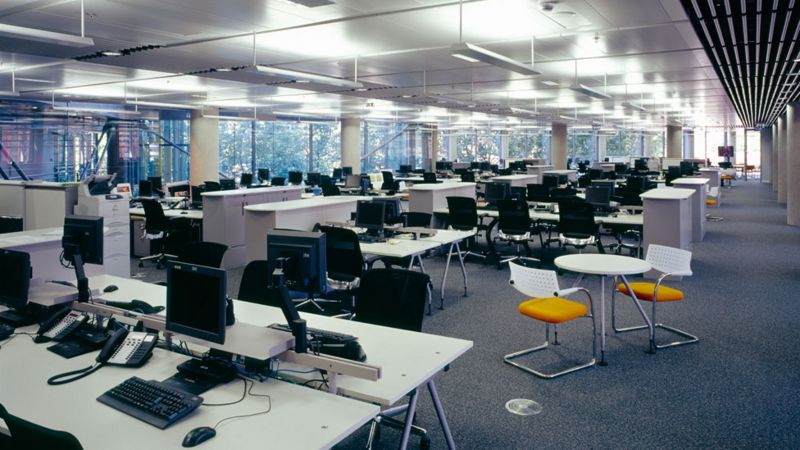
Sistema de cableado estructurado (SCE): infraestructura local de telecomunicaciones diseñada a partir de un conjunto de normas y/o estándares para garantizar su calidad, escalabilidad, modularidad, longevidad e independencia, tanto de los servicios que pueda albergar como de los fabricantes de componentes.
Características principales
Flexible
Permite identificar, reubicar, modificar y ampliar de forma racional.
Eficiente
Económico y optimiza el espacio físico.
Abierto
Independiente de los fabricantes (que cumplan los estándares para SCE).
Longevo
Pensado para durar 10 años como mínimo.
La red se segmenta en subsistemas de red independientes pero integrados en una organización jerarquizada por niveles.
2 Espacios y niveles jerárquicos del cableado estructurado
- Puesto de trabajo o área de trabajo.
- Subsistema distribuidor o cableado distribuidor o armario.
- Subsistema horizontal o cableado horizontal o de planta.
- Subsistema vertical, dorsal (backbone) o de edificio.
- Cuarto de telecomunicaciones, entrada de servicios y equipos.
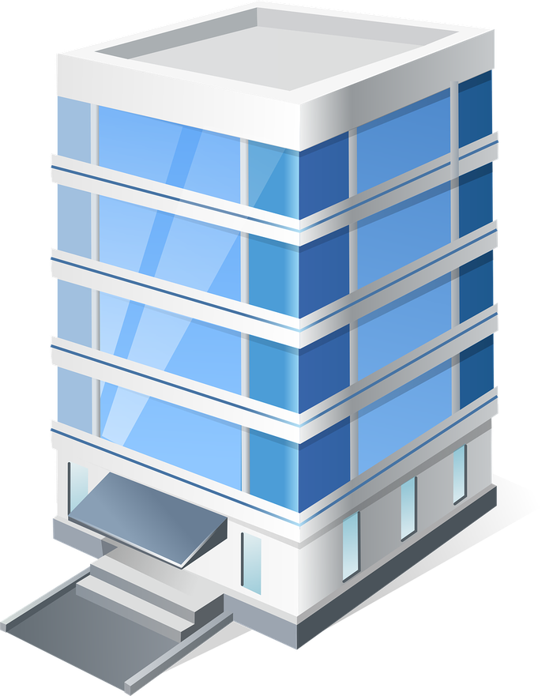
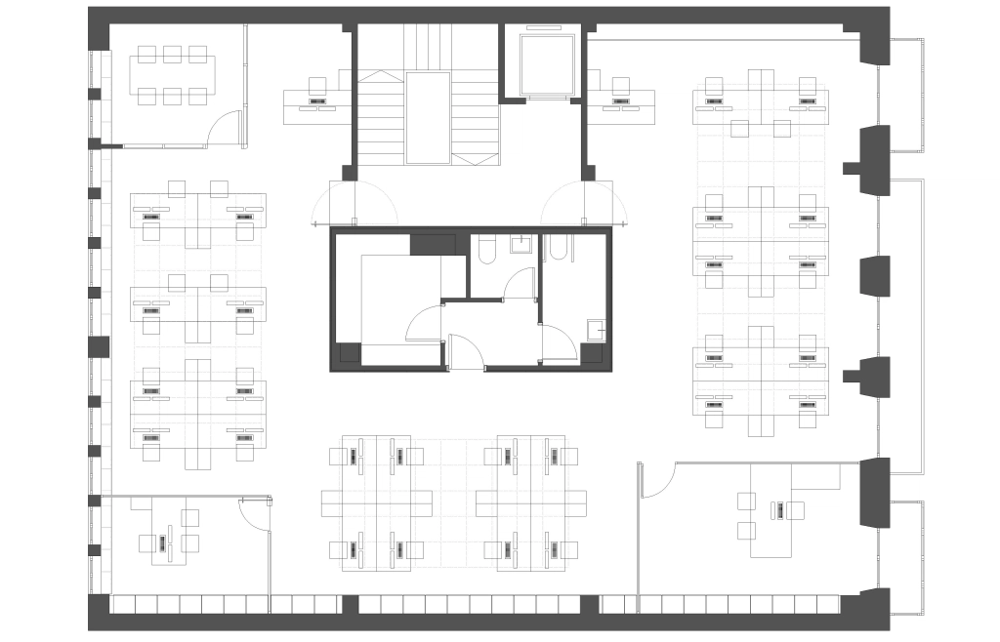
Áreas o puestos de trabajo
- Ubicación destinada al dispositivo final (PC, impresora, teléfono, etc.).
- Normalmente tiene una o dos tomas de usuario (rosetas) que pueden conectar un dispositivo individual a la red.
- Los dispositivos se conectan a las tomas de red por medio de latiguillos (patch cords o patch cables).
- Normalmente se usa cable directo.
Longitud máxima del latiguillo: 10 metros.
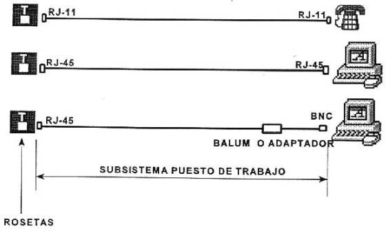
Subsistema distribuidor
- Lugar donde se realizan las conexiones del sistema de cableado a los dispositivos de red (hub, switch, router…).
- Formado por racks (armarios distribuidores o repartidores), enchufes, paneles de parcheo (patch panels), dispositivos de red, servidores, SAI (sistemas de alimentación ininterrumpida), etc.
- Los dispositivos de red se conectan a los paneles de parcheo por medio de latiguillos.
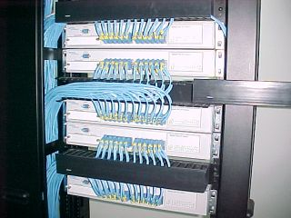
Subsistema horizontal o de planta
- Conecta los subsistemas distribuidores con las áreas de trabajo.
- Cable desde el patch panel hasta la roseta o equipo.
- Longitud máxima: 90 metros.
(latiguillo dispositivo de red – patch panel) + (latiguillo roseta – equipo final) < 10 metros
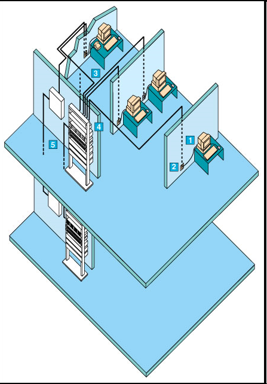
Subsistema vertical o backbone
- Conecta los subsistemas horizontales.
- Soporta gran parte del tráfico procedente de diferentes áreas de trabajo.
- Puede requerir medios de ancho de banda superior (fibra óptica).
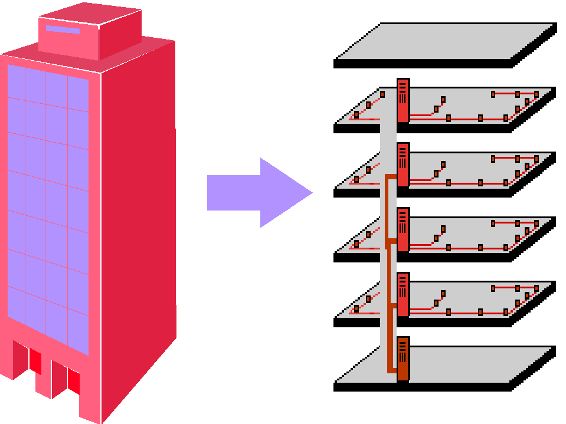
¿Quién es quién?

3 Elementos del SCE
Canalizaciones
- Conductos a través de los cuales se tienden los cables para que queden recogidos y protegidos convenientemente.
- Los cables de datos y de fuerza (corriente eléctrica) suelen separarse para evitar interferencias.
- Las canalizaciones por falsos suelos (suelo técnico) o techos aportan limpieza y estética.
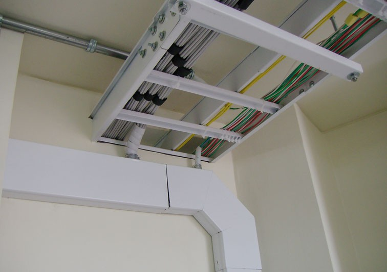
Rosetas y latiguillos
Rosetas
- Pueden adoptar muchas formas.
- Pueden ser para cable UTP (RJ-45), cable telefónico (RJ11), cable coaxial (BNC) o fibra óptica (ST o SC).
Latiguillos
- Cables que terminan en conectores (RJ45, RJ11, BNC, ST o SC).
- Latiguillos UTP: directos o cruzados.
Armarios de conexión o racks
- En instalaciones medias o grandes, los equipos de comunicaciones se instalan en armarios especiales con dimensiones estandarizadas (19 pulgadas).
- Permiten manipular fácilmente los cables y fijarlos adecuadamente.
La altura se mide en U. 1 U = 1,75" = 3 agujeros para atornillar.
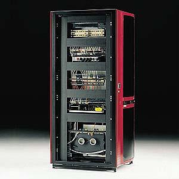
Enracado de equipos
Para colocar equipos enracados, que ocupan normalmente una unidad, es necesario colocar las tuercas enjauladas en los huecos apropiados para atornillar los equipos a la altura adecuada.
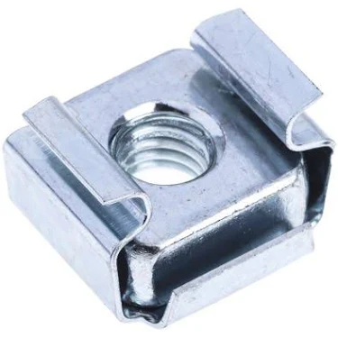
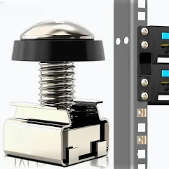
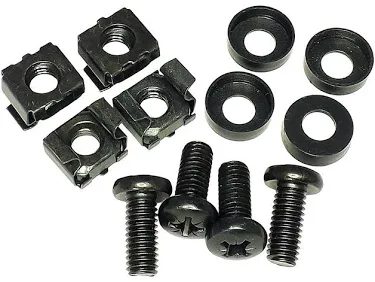
Patch panels
Dispositivo de interconexión que permite conectar, a través de cables, otros dispositivos u otros patch panels.
Un patch panel funciona como un centro organizador para el cableado de red. En su parte posterior dispone de bloques de pines donde se fijan a presión (punzonan) los cables rígidos que vienen de las tomas de pared. En su parte frontal ofrece puertos hembra donde se conectan los cables flexibles (latiguillos) que van directamente a los dispositivos de red.
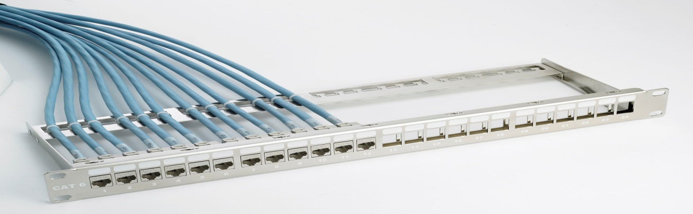
Un patch panel también puede ser de fibra óptica.
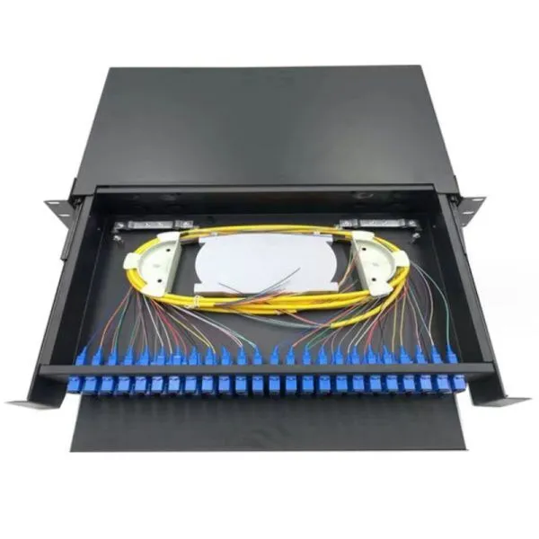
Etiquetado
- La norma EIA/TIA-606 especifica que cada terminación de hardware debe tener alguna etiqueta que la identifique de manera exclusiva.
- Un cable tiene dos terminadores; por tanto, cada uno de estos extremos recibirá un nombre.
- Se etiquetan las rosetas y, a partir de estas etiquetas, las de los cables.